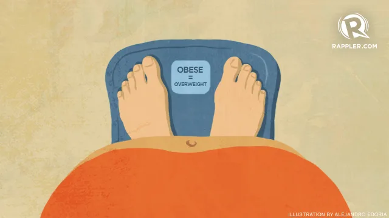
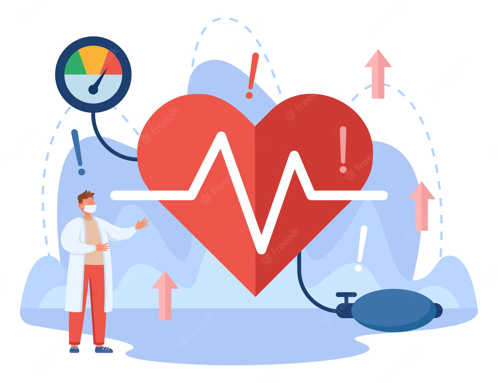
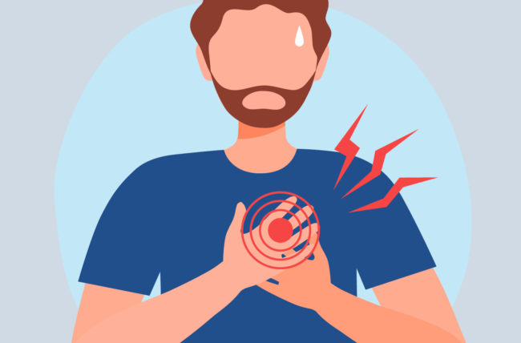
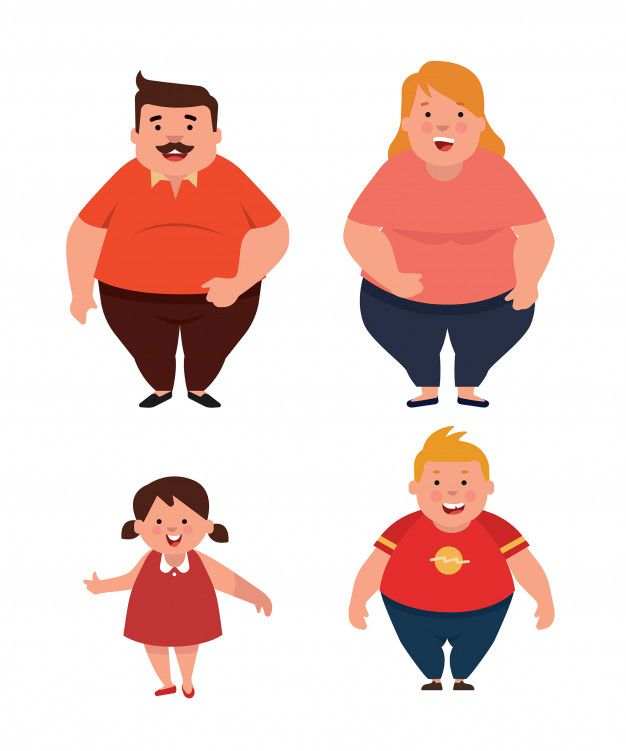

What is obesity, and what causes it?
Obesity is a condition that occurs when a person has excess weight or body fat that might affect their health. A doctor will usually suggest that a person has obesity if they have a high body mass index (BMI).
When is a person Overweight/Obese?
when the BMI of a person is greater then 25 than the person is called Under Weight.

Risks of being Overweight/Obese
All-causes of death (mortality).
High blood pressure (hypertension).
High LDL cholesterol, low HDL cholesterol, or high levels of triglycerides (dyslipidemia).
Type 2 diabetes.
Coronary heart disease.
Stroke.
Gallbladder disease.
Sleep apnea and breathing problems.
Many types of cancer.
Low quality of life.
Mental illness such as clinical depression, anxiety, and other mental disorders4,5.



Causes:
Food and Activity:People gain weight when they eat more calories than they burn through activity. This imbalance is the greatest contributor to weight gain.
Genetics:Research shows that genetics plays a role in obesity. Genes can directly cause obesity in such disorders as Prader-Willi syndrome.
Genes also may contribute to a person’s susceptibility to weight gain. Scientists believe that genes may increase a person’s likelihood of having obesity but that outside factors, such as an abundant food supply or little physical activity, also may be required for a person to have excess weight.
Health Conditions and Medications:Some hormone problems may cause overweight and obesity, such as underactive thyroid, Cushing syndrome and polycystic ovary syndrome.
Certain medicines also may cause weight gain, including some corticosteroids, antidepressants, and seizure medicines.
Stress, Emotional Factors, and Poor Sleep:Some people eat more than usual when they are bored, angry, upset, or stressed.
Studies also have found that the less people sleep, the more likely they are to have overweight or obesity. This is partly because hormones that are released during sleep help control appetite and the body’s use of energy.

Treatment:
The best way to treat obesity is to eat a healthy, reduced-calorie diet and exercise regularly.
eat a balanced, calorie-controlled diet as recommended by your GP or weight loss management health professional (such as a dietitian)
take up activities such as fast walking, jogging, swimming or tennis for 150 to 300 minutes (two-and-a-half to five hours) a week
eat slowly and avoid situations where you know you could be tempted to overeat
In rare cases, weight loss surgery may be recommended.